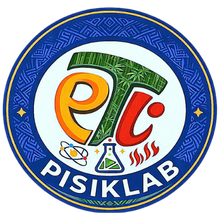

1st Law of Thermodynamics
First Law: Energy cannot be created or destroyed.

Localized Physics Experiments and Video Demonstrations for Thermodynamics.
Top learners ranked by energy points
Current Badge
Energy Points
First Law: Energy cannot be created or destroyed.
Not started yet

Second Law: Total entropy of an isolated system always increases over time.
Not started yet
Watch localized experiments and demonstrations for thermodynamics lessons.
Locked
Manage your account details and learning progress.
| Date | Assessment Score | Assessment Badge |
|---|---|---|
| No attempts yet. | ||
Reset your points, badges, progress, and activity records. This cannot be undone.
PisikLab is an innovative educational initiative designed to ignite curiosity and deepen understanding in the field of science through interactive, learner-centered experiences. Rooted in the belief that meaningful learning occurs through exploration and engagement, PisikLab integrates technology, inquiry-based activities, and real-world applications to make scientific concepts more accessible and relevant to students.
A key feature of PisikLab is its emphasis on localized laboratory experiments, which are carefully designed using readily available and culturally relevant materials. This approach allows learners to connect scientific concepts to their everyday environment, making learning more meaningful, practical, and inclusive. By grounding experiments in local contexts, PisikLab ensures that science education remains accessible even in resource-limited settings.
The platform serves as a dynamic virtual space where learners can explore scientific ideas, conduct guided activities, and develop critical thinking skills at their own pace. By combining visually engaging materials with structured learning modules, PisikLab supports diverse learning styles and encourages active participation, whether in the classroom or in remote settings.
Aligned with contemporary educational standards, PisikLab aims to enhance science literacy, foster problem-solving abilities, and cultivate a deeper appreciation for the natural world. It also empowers educators by providing adaptable resources that can complement existing curricula and enrich the overall teaching and learning experience.
Ultimately, PisikLab aspires to inspire the next generation of thinkers, innovators, and scientifically literate individuals by transforming how science is taught and experienced.